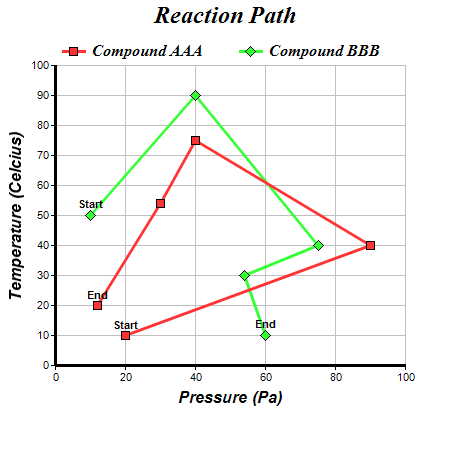

This example demonstrates drawing a line chart with arbitrary x coordinates (not increasing or decreasing in one direction), and adding custom data labels to data points.
The x values of the data points are set into the chart using
Layer.setXData. ChartDirector merely joins the points together with lines. It does not require the points to following any particular direction.
Note that this example has special labels for the start and end points of the lines. They are created using
Layer.addCustomDataLabel.
The following is the command line version of the code in "cppdemo/xyline". The MFC version of the code is in "mfcdemo/mfcdemo". The Qt Widgets version of the code is in "qtdemo/qtdemo". The QML/Qt Quick version of the code is in "qmldemo/qmldemo".
#include "chartdir.h"
int main(int argc, char *argv[])
{
// The (x, y) data for the first line
double dataX0[] = {20, 90, 40, 30, 12};
const int dataX0_size = (int)(sizeof(dataX0)/sizeof(*dataX0));
double dataY0[] = {10, 40, 75, 54, 20};
const int dataY0_size = (int)(sizeof(dataY0)/sizeof(*dataY0));
// The (x, y) data for the second line
double dataX1[] = {10, 40, 75, 54, 60};
const int dataX1_size = (int)(sizeof(dataX1)/sizeof(*dataX1));
double dataY1[] = {50, 90, 40, 30, 10};
const int dataY1_size = (int)(sizeof(dataY1)/sizeof(*dataY1));
// Create a XYChart object of size 450 x 450 pixels
XYChart* c = new XYChart(450, 450);
// Set the plotarea at (55, 65) and of size 350 x 300 pixels, with white background and a light
// grey border (0xc0c0c0). Turn on both horizontal and vertical grid lines with light grey color
// (0xc0c0c0)
c->setPlotArea(55, 65, 350, 300, 0xffffff, -1, 0xc0c0c0, 0xc0c0c0, -1);
// Add a legend box at (50, 30) (top of the chart) with horizontal layout. Use 12pt Times Bold
// Italic font. Set the background and border color to Transparent.
c->addLegend(50, 30, false, "Times New Roman Bold Italic", 12)->setBackground(Chart::Transparent
);
// Add a title to the chart using 18pt Times Bold Itatic font
c->addTitle("Reaction Path", "Times New Roman Bold Italic", 18);
// Add a title to the y axis using 12pt Arial Bold Italic font
c->yAxis()->setTitle("Temperature (Celcius)", "Arial Bold Italic", 12);
// Set the y axis line width to 3 pixels
c->yAxis()->setWidth(3);
// Add a title to the x axis using 12pt Arial Bold Italic font
c->xAxis()->setTitle("Pressure (Pa)", "Arial Bold Italic", 12);
// Set the x axis line width to 3 pixels
c->xAxis()->setWidth(3);
// Add a red (0xff3333) line layer using dataX0 and dataY0
LineLayer* layer1 = c->addLineLayer(DoubleArray(dataY0, dataY0_size), 0xff3333, "Compound AAA");
layer1->setXData(DoubleArray(dataX0, dataX0_size));
// Set the line width to 3 pixels
layer1->setLineWidth(3);
// Use 9 pixel square symbols for the data points
layer1->getDataSet(0)->setDataSymbol(Chart::SquareSymbol, 9);
// Add custom text labels to the first and last point on the scatter plot using Arial Bold font
layer1->addCustomDataLabel(0, 0, "Start", "Arial Bold");
layer1->addCustomDataLabel(0, 4, "End", "Arial Bold");
// Add a green (0x33ff33) line layer using dataX1 and dataY1
LineLayer* layer2 = c->addLineLayer(DoubleArray(dataY1, dataY1_size), 0x33ff33, "Compound BBB");
layer2->setXData(DoubleArray(dataX1, dataX1_size));
// Set the line width to 3 pixels
layer2->setLineWidth(3);
// Use 11 pixel diamond symbols for the data points
layer2->getDataSet(0)->setDataSymbol(Chart::DiamondSymbol, 11);
// Add custom text labels to the first and last point on the scatter plot using Arial Bold font
layer2->addCustomDataLabel(0, 0, "Start", "Arial Bold");
layer2->addCustomDataLabel(0, 4, "End", "Arial Bold");
// Output the chart
c->makeChart("xyline.png");
//free up resources
delete c;
return 0;
}
© 2023 Advanced Software Engineering Limited. All rights reserved.